Configuración Workflows, Citas, Entidades y Menús
Esta sección agrupa la configuración alrededor del flujo operacional de los servicios. Importante : los workflows en Facil son predefinidos en el código (no hay designer visuel drag-drop) — 37 workflow_codes cubren todos los casos actuales (pasaportes, residencia, vehículos, contratos, bundle, inspecciones terreno, etc.), enumerados en la seed 034_valid_workflow_codes.sql. El admin configura aquí los parámetros : tarifas suplementarias, citas (horarios y reglas), entidades administrativas, ciudades y ubicaciones, además del menú dinámico por rol.
1. Catálogo de los 37 workflow_codes predefinidos
Los workflows están definidos por el código backend (módulo workflows + tabla workflow_definitions, validados contra el CHECK constraint generado por la seed 034_valid_workflow_codes.sql) y representan el ciclo de vida completo de cada tipo de servicio fiscal. El admin los visualiza en lectura sola; las modificaciones requieren un release backend.
| Familia | Cant. | workflow_codes |
|---|---|---|
| Pasaportes (CNEDOGE) | 5 | PASAPORTE_NUEVO, _RENOVACION, _PERDIDA, _ROBO, _DETERIORO |
| Permisos de conducir (DGT) | 5 | CONDUCIR_NUEVO, _CANJE, _RENOVACION, _DUPLICADO, _EXTENSION |
| Contratos (ONRC) | 7 | CONTRATO_OBRA, _SERVICIO, _SUMINISTRO, _CONCESION, _JOINT_VENTURE, _ARRENDAMIENTO, _OTRO |
| Extranjería (visados + permanencia + salida) | 4 | PRORROGA_VISADO, VISADO_ALTERNATIVO, PERMANENCIA_EXTRANJERIA, SALIDA_VISADO_VENCIDO |
| Residencia (CNEDOGE) | 2 | RESIDENCIA_PRIMERA_VEZ, RESIDENCIA_RENOVACION |
| Vehículos (DGT + ITV) | 7 | VEHICULO_PRIMERA_MATRICULACION, _TRANSFERENCIA, _RENOVACION_ITV, _RENOVACION_CUVE, _DUPLICADO_PERMISO, _DUPLICADO_CUVE, _CAMBIO_CARACTERISTICAS |
| Función Pública (MINFP) | 5 | FP_VERIFICACION_FUNCIONARIO, _CARNET_FUNCIONARIO, _PROMOCION_ADMINISTRATIVA, _PERMISO_EXTRAORDINARIO, _CERTIFICADO_ADMINISTRATIVO |
| Inspecciones de campo | 1 | FIELD_INSPECTION |
| Pago agrupado (bundle empresa) | 1 | BUNDLE_PAYMENT |
| Total | 37 |
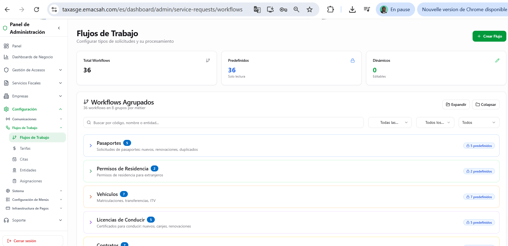
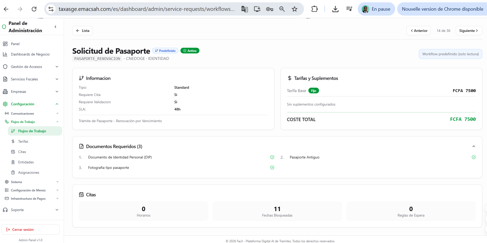
2. Tarifas: base (workflow_tariffs) + suplementarias (tariff_supplements)
El sistema distingue dos capas de tarifas: la tarifa base por workflow (tabla workflow_tariffs, 31 entradas seedeadas para los 37 workflows) y los suplementos transversales (tabla tariff_supplements) aplicables según el caso. Hay actualmente 3 suplementos seedeados que el admin puede activar o editar :
| Código | Descripción | Monto (XAF) |
|---|---|---|
CEDULA_PERSONAL | Cédula complementaria (uso administrativo) | 1 500 |
POLIZA | Póliza fiscal anexa | 1 000 |
TIMBRE_FISCAL | Timbre fiscal oficial | 500 |
Cada suplemento se asocia a uno o varios workflows; el motor de cálculo de tarifas (fiscal_services) lo añade a la tarifa base al momento de crear la solicitud.
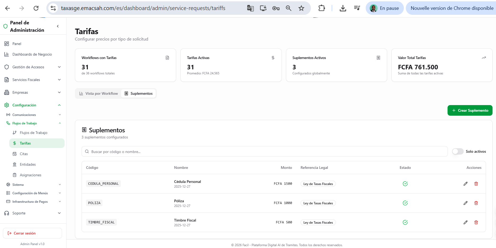
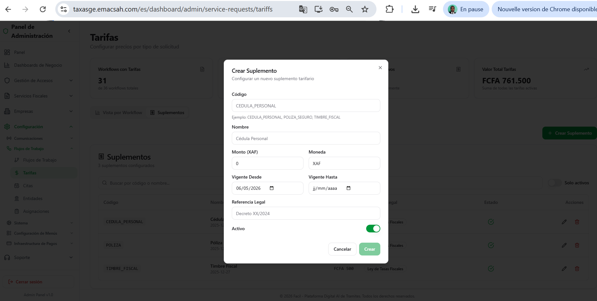
3. Gestión de las citas (slot configs + delay rules)
Para los servicios que requieren una cita en persona (CNEDOGE biométrico, DGT examen práctico, Extranjería retiro de carnet), el admin configura los horarios de oficina por entidad + ciudad (tabla appointment_slot_configs, 15 configuraciones seedeadas: 5 días × 3 entidades), las fechas bloqueadas (feriados nacionales) y las reglas de espera por prioridad (tabla appointment_delay_rules, 15 reglas con niveles URGENT 1–2 días, NORMAL 2–5 días, LOW 4–7 días según entidad). Los slots tienen una duración por defecto de 30 minutos con 2 plazas/slot (1 plaza los miércoles).
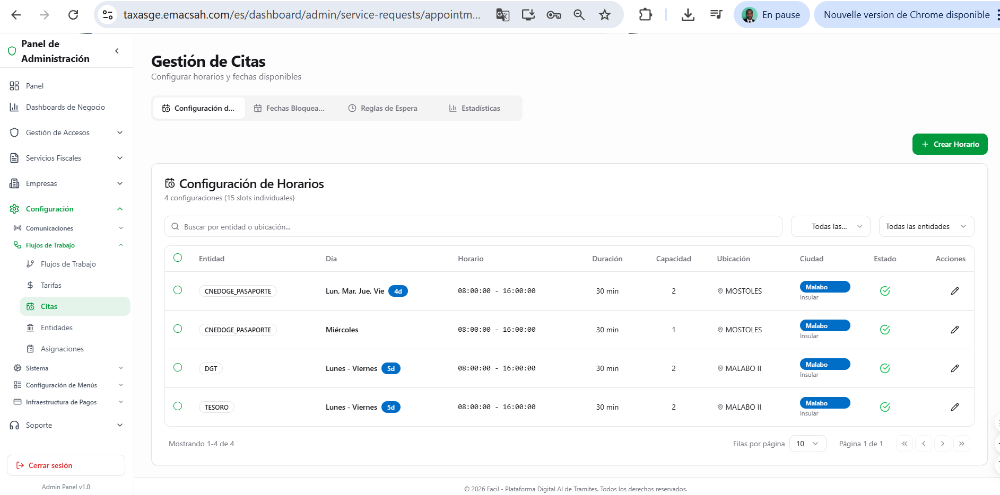
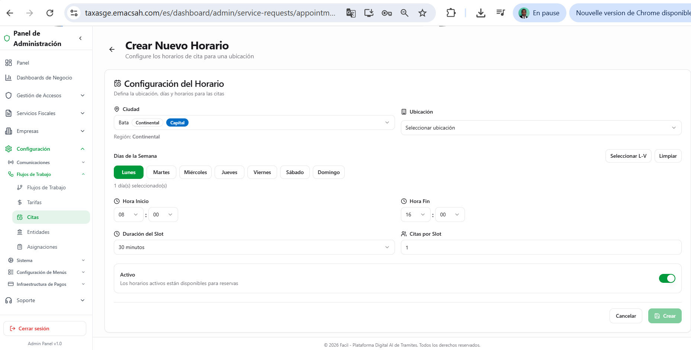
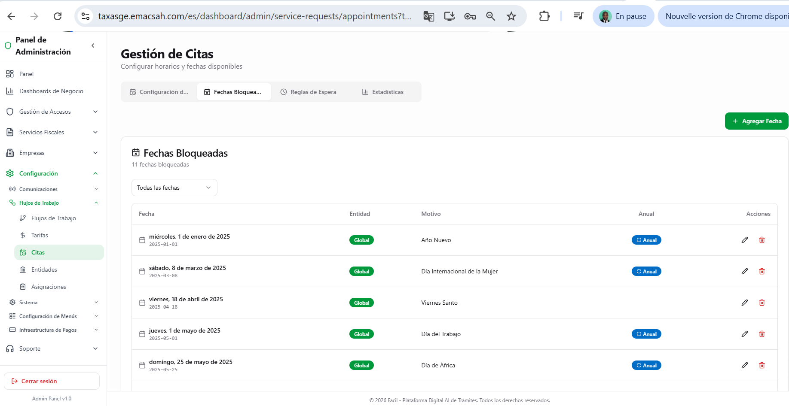
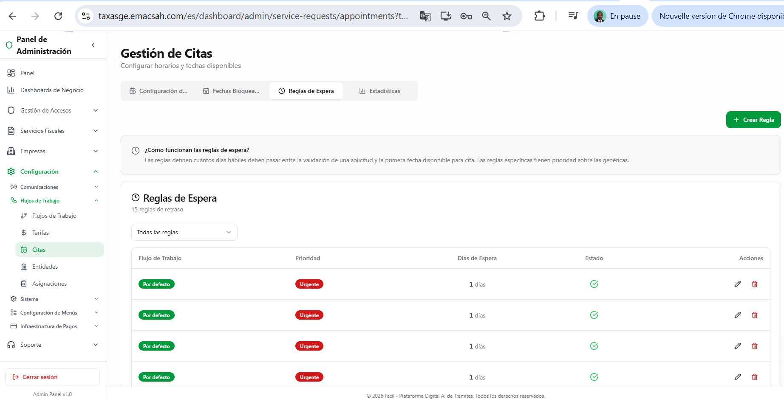
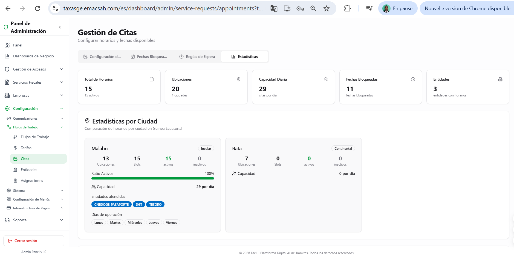
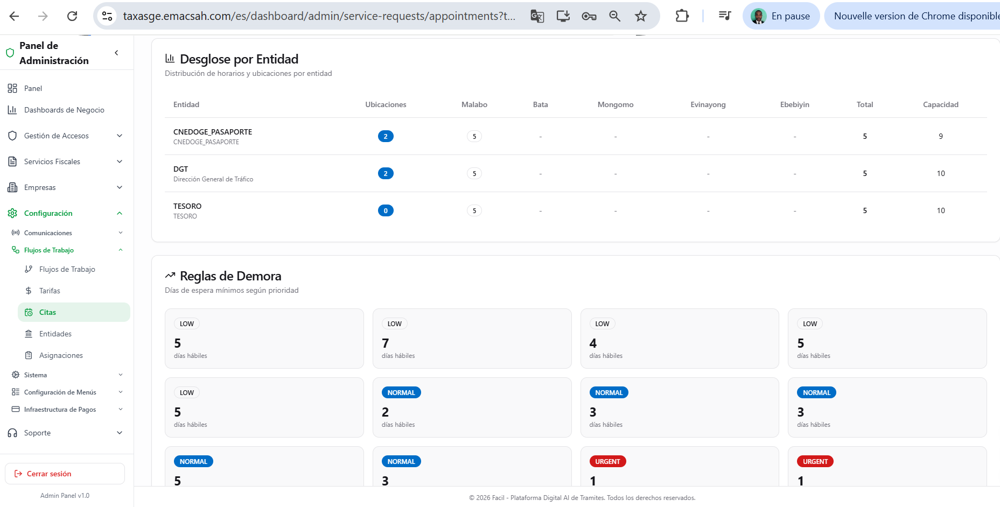
4. Entidades administrativas (20 entidades)
Las entidades son las 20 administraciones públicas seedeadas en Facil (tabla entities, seed 014_entities.sql) : MINFP, POLICIA, TESORO, AYUNTAMIENTO, CAMARA_COMERCIO, MIN_HACIENDA, MIN_COMERCIO, MIN_INFORMACION, MIN_TURISMO, MIN_AGRICULTURA, MIN_ELECTRICIDAD, CNEDOGE_PASAPORTE, ONRC, OFIVE, DGT, COMISARIA, EXTRANJERIA, CNEDOGE, CNEDOGE_RESIDENCIA, ITV. Cada entidad tiene un código, un nombre, un tipo padre (ministerio o municipio), y los workflow_codes que gestiona (columna JSONB workflow_codes).
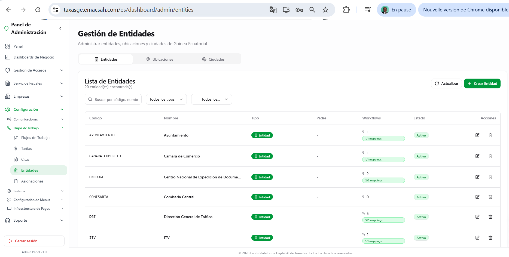
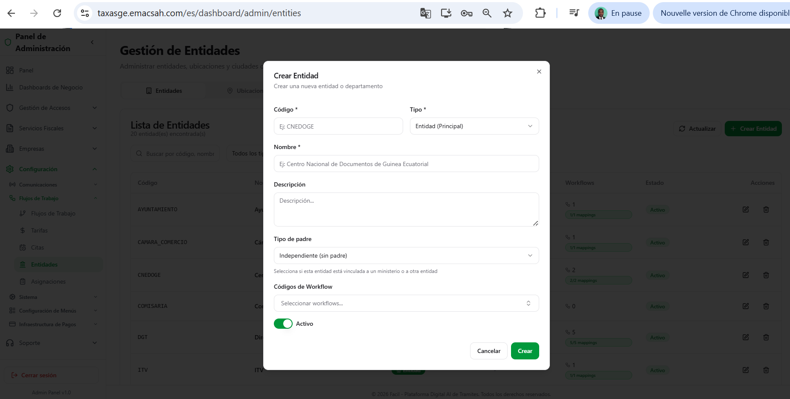
5. Ciudades (17) y ubicaciones físicas (34)
17 ciudades de Guinea Ecuatorial registradas (seed 013_cities.sql) : Bata, Ebebiyin, Evinayong, Mongomo, Oyala, Malabo, Baney, Luba, San Antonio de Pale, Mbini, Niefang, Micomeseng, Anisok, Riaba, Cogo, Akurenam, Nsork. Cada una con su región (Insular o Continental) y su mención de capital eventual. Las 34 ubicaciones físicas (tabla entity_locations, seed 015_entity_locations.sql) vinculan una entidad a una ciudad con su dirección y mención de sede principal (oficina central de la entidad).
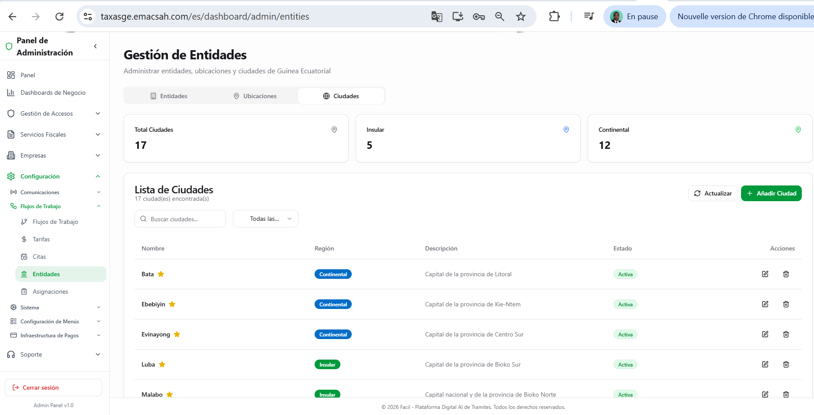
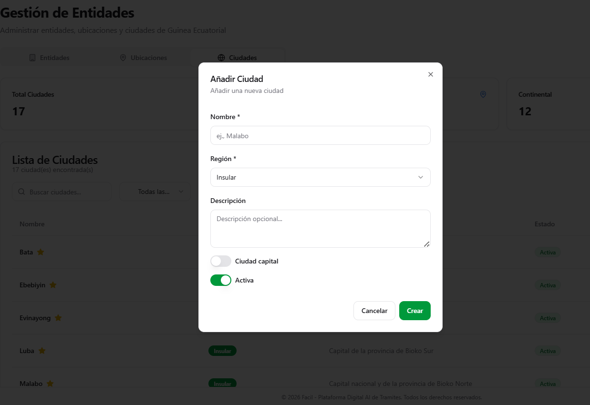
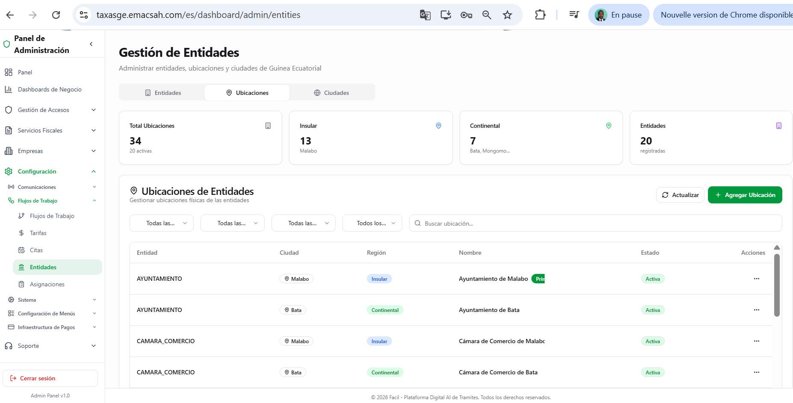
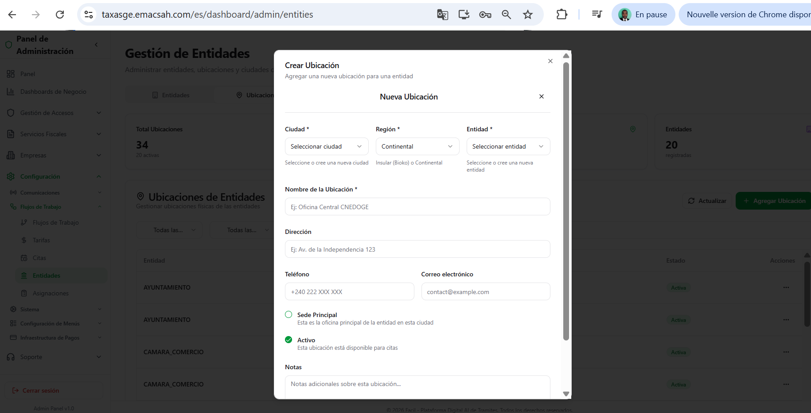
7. ¿Por qué no hay Workflow Designer drag-drop?
Workflows predefinidos por seguridad
Los 37 workflows en Facil cubren los servicios fiscales oficiales de Guinea Ecuatorial. Una modificación visual ad-hoc desde la UI introduciría riesgos importantes : un workflow mal configurado podría dejar pasar fraudes, perder solicitudes, o generar inconsistencias con la legislación. Por eso, los workflows están definidos por el código (probados, auditados, versionados) y validados por el CHECK constraint generado a partir de 034_valid_workflow_codes.sql. Solo los parámetros (tarifas base + 3 suplementos, horarios y reglas de citas, entidades, ubicaciones, menús) son configurables por el admin. Si una nueva ley introduce un nuevo tipo de servicio, el equipo técnico desarrolla el workflow correspondiente, actualiza la seed 034_valid_workflow_codes.sql, y lo despliega con un release.